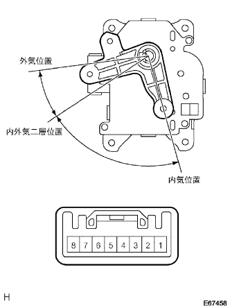

ヒータ&エアコンデイシヨナシステム 内外気切替えサーボ回路 |
| 手順1 | アクチュエーターチェック |
アクチュエータチェックモードにし、ダンパサーボ(吸込口)の作動を点検する。(要領は参照)
| ステップ | 設定温度 | ブロワレベル | 吹出口 | 吸込口 |
|---|---|---|---|---|
| 1 | MAX COLD－20．5 | 0 | FACE | 外気位置 |
| 2 | 21．0－22．5 | 1 | B/Ｌ | 外気位置 |
| 3 | 23．0－25．0 | 1 | FOOT1 | 外気位置(除く寒冷地) 内外気二層位置(寒冷地) |
| 4 | 25．5－27．5 | 16 | FOOT2 | 内気位置 |
| 5 | 28．0－30．0 | 16 | F/D | 内気位置 |
| 6 | 30．5－MAX HOT | 31 | DEF | 内気位置 |
|
| ||||
| NG | |
| 手順2 | ワイヤハーネスまたはコネクター点検（ダンパサーボ電源系） |
ダンパサーボのコネクタを切り離す。
 |
SST(トヨタエレクトリカルテスター)を使用して、ダンパサーボの車両ワイヤハーネス側コネクタ8端子←→ボデーアース間の導通を点検する。
IGスイッチをONにする。
SST(トヨタエレクトリカルテスター)を使用して、ダンパサーボの車両ワイヤハーネス側コネクタ7端子←→8端子間の電圧を測定する。
|
| ||||
| OK | |
| 手順3 | ダンパ サーボSUB-ASSY NO.1単体点検 |
ダンパサーボを取りはずす。
|  |
コネクタの7端子にバッテリーのプラス、8端子にバッテリーのマイナスを接続する。
コネクタの各端子にバッテリーのマイナスを接続したとき、アームがスムーズに回転し、各モード位置で停止することを点検する。
| バッテリーマイナス接続端子 | アーム停止位置 |
|---|---|
| 1 | 内気位置 |
| 2 | 内外気二層位置 |
| 3 | 外気位置 |
|
| ||||
| OK | |
| 手順4 | ワイヤハーネスまたはコネクター点検（センタクラスタモジュールスイッチ-ダンパサーボ） |
センタクラスタモジュールスイッチのコネクタを切り離す。
 |
SST(トヨタエレクトリカルテスター)を使用して、車両ワイヤハーネスの各コネクタ端子間の導通およびGNDショート(短絡)を点検する。
| センタクラスタモジュールスイッチ側 端子番号（端子記号） | ダンパサーボ側 端子番号 |
|---|---|
| A25(FRS) | 3 |
| A24(REC) | 1 |
| センタクラスタモジュールスイッチ側 端子番号(端子記号) | ダンパサーボ側 端子番号 |
|---|---|
| A25(FRS) | 3 |
| A26(R/F1) | 2 |
| A24(REC) | 1 |
|
| ||||
| OK | ||
| ||